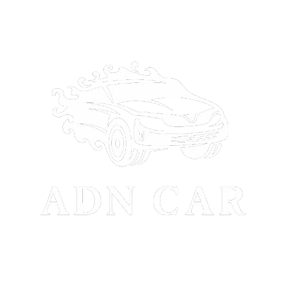

El sistema de suspensión y dirección es un elemento clave en la seguridad activa del automóvil. Su buen funcionamiento no solo impacta en la seguridad, sino también en la comodidad al conducir, especialmente en carreteras con muchas irregularidades.
Nuestro servicio se adapta a las necesidades específicas del vehículo y puede incluir:
El precio varía según el tipo de vehículo y el servicio específico requerido. Contáctanos y con gusto te asesoramos.
¿Listo para mantener tu vehículo en las mejores condiciones? Agenda tu cita ahora y pronto nos pondremos en contacto contigo.
Agendar Cita